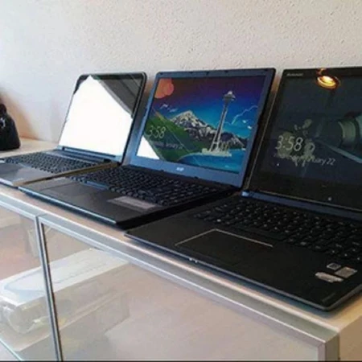
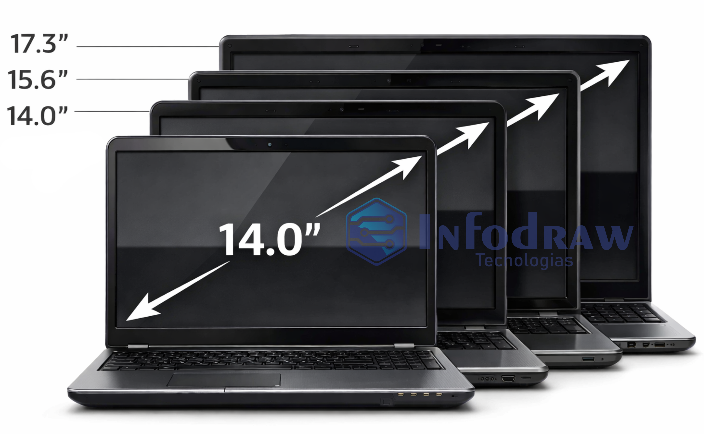

Buscamos e entregamos seu equipamento nas regiões de atendimento.
Da formatação ao conserto de hardware, cobrimos todas as necessidades do seu equipamento com qualidade e garantia.
Windows, macOS e Linux. Reinstalação completa do sistema, drivers e programas essenciais com backup dos seus dados.
Limpeza profunda de vírus, ransomware, spyware e adware. Seu computador seguro e protegido novamente.
Troca de HD por SSD, upgrade de memória RAM, substituição de placas-mãe, fontes e demais componentes.
Limpeza interna completa, troca de pasta térmica e revisão do sistema de refrigeração. Elimina superaquecimento.
Trocamos telas quebradas, com manchas ou falhas de imagem. Utilizamos peças compatíveis com garantia.
Recuperamos arquivos de HDs danificados, partições corrompidas e pendrives com falha. Diagnóstico sem custo.
Configuração de redes Wi-Fi, cabeadas, roteadores e VPNs. Instalação de impressoras e periféricos.
Substituição de baterias de notebooks com qualidade e garantia. Durabilidade restaurada ao original.
Configuração de soluções de backup local e na nuvem (Google Drive, OneDrive, Dropbox) para proteger seus dados.

Nossos planos de manutenção preventiva mantêm seu equipamento saudável, rápido e seguro — evitando surpresas e prolongando a vida útil do hardware.
Remoção de poeira, troca de pasta térmica e inspeção completa da refrigeração. Reduz temperatura e ruídos.
Varredura completa por ameaças, atualização de antivírus e revisão das configurações de firewall.
Verificação de setores defeituosos em HDs e SSDs, desfragmentação e otimização do sistema de arquivos.
Teste de memória RAM, análise de temperatura do processador e estabilidade do sistema operacional.
Ligue, mande WhatsApp ou preencha o formulário. Descrevemos o problema juntos.
Buscamos seu equipamento no horário combinado, sem custo adicional na região de atendimento.
Em até 24h informamos o problema, o orçamento e o prazo. Só prosseguimos com sua aprovação.
Devolvemos seu equipamento consertado com garantia do serviço realizado.
Peças originais e compatíveis, com garantia. Consulte disponibilidade pelo WhatsApp.

Upgrade de velocidade. Disponível nos tamanhos 120GB, 240GB, 480GB e 1TB.

Módulos para desktop e notebook. Aumente a velocidade e multitarefa do sistema.

Revisados, formatados e com garantia de 3 meses. Ideais para trabalho e estudo.

Compatíveis com Dell, Lenovo, HP, Samsung, Acer e Asus. Com garantia.

Telas de reposição para as principais marcas e modelos. Instalação inclusa.

Teclados, mouses, hubs USB, cabos, adaptadores e muito mais.
Telebusca disponível de segunda a sexta. Diagnóstico em até 24 horas.
"Ótimo atendimento! Mandei meu notebook com tela quebrada pela telebusca e em 2 dias já estava pronto. Preço justo e profissional."
"Meu PC estava lentíssimo, vírus por todo lado. A equipe limpou tudo, fez a formatação e ainda colocou um SSD. Ficou como novo!"
"Super indico! Meu HD quebrou com tudo dentro. Recuperaram meus arquivos quando achei que estava tudo perdido. Salvaram minha vida!"
Reunimos as 15 situações mais comuns que resolvemos todo dia. Muitas vezes a solução é simples e você mesmo consegue fazer em poucos minutos.
Se nenhuma dica funcionou, pode ser algo mais sério. A Infodraw faz diagnóstico gratuito e busca seu equipamento sem custo na região.
Antes de qualquer coisa, o problema pode ser simplesmente de energia. Tente estes passos em ordem:
Bateria parada em uma porcentagem ou sempre em 0%? Tente isto:
Lentidão é o problema mais comum e tem várias causas. Comece pelo mais simples:
A tela azul tem um código de erro que diz exatamente o que falhou. Anote o código que aparece (ex: MEMORY_MANAGEMENT) e tente:
Na maioria das vezes o problema é no roteador, não no computador:
Sinais clássicos de vírus: pop-ups, browser abrindo sites estranhos, ícones desconhecidos na área de trabalho. Faça:
O monitor está ligado (luz acesa) mas sem imagem? Pode ser coisa simples:
A atualização ficou parada por horas e não avança? Faça com calma:
Superaquecimento é sério — pode danificar o hardware. Antes de tudo:
Calma — seus arquivos não se perdem por causa de senha. Há como recuperar:
Som sumindo do nada quase sempre é configuração, não hardware:
Impressora offline é um dos problemas mais chatos mas geralmente tem solução simples:
Disco cheio trava o Windows e causa lentidão severa. Libere espaço assim:
Programa que não abre pode ter várias causas — do mais simples ao mais complexo:
Essa é a dica mais importante de todas — a maioria das pessoas só pensa em backup depois de perder tudo. Faça agora:
Nenhuma dica encontrada para "".
Tente outra palavra ou fale com um técnico.
Seg a Sex: 8h às 18h
Porto Alegre · Veranópolis · Cotiporã · Fagundes Varela · Vila Flores · Nova Prata e região